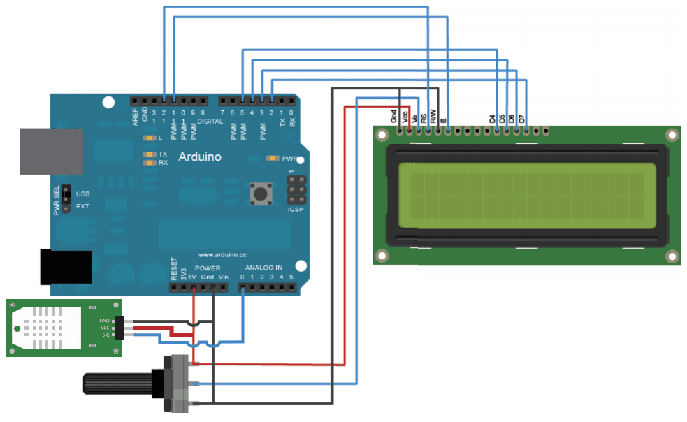

You can use Temp & Humi Sensor to get temperature and humidity of your house.
This demo will show you how to get the value and show it to LCD.
Hardware Required:
Circuit：
Temp & Humi Sensor connect to A0.
About the connect of LCD, please refer to LCD

Code:
Open Arduino IDE, click File -> Shetchbook -> TempHumiSensor.
You can get humidity by readHumidity() and temperature by readTemperature(). This 2 function will return a float value.
About LCD, please refer to LCD.
Reference:
Copyright (c) 2008-2016 Seeed Development Limited (www.seeedstudio.com / www.seeed.cc)